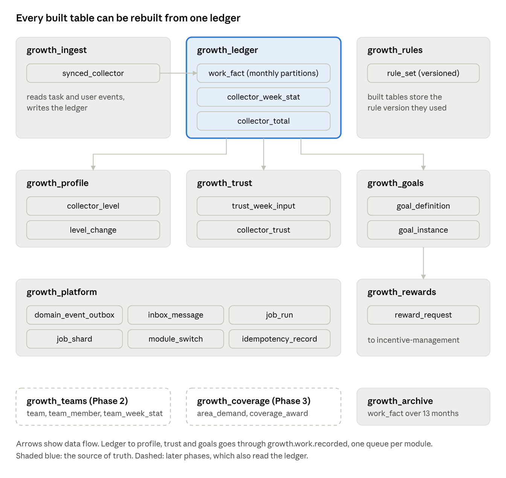

Collector Growth System Design
Module design
The service is split into modules. Each module is a NestJS module with the same api / application / domain / infrastructure folders as incentive-management. We follow three rules:
- Each module has its own PostgreSQL schema.
- A module never reads another module's tables.
- A module calls another module only through a port.
A CI check (dependency-cruiser) fails the build if a module imports another module's domain or infrastructure folder. This keeps modules apart, so one team can work on one module, and a module can move to its own service later.
| Module | Schema | Phase | What it does | Ports it calls |
|---|---|---|---|---|
ingest |
growth_ingest |
0 | Reads task and user events, keeps collector status, runs the nightly catch-up job | WorkLedgerPort, InboxPort |
ledger |
growth_ledger |
0 | Saves each decision, weekly counts and all-time totals. Sends growth.work.recorded. |
OutboxPort |
rules |
growth_rules |
1 | Saves rule versions, checks them, turns them on | None |
profile |
growth_profile |
1 | Level and level history | RuleSetPort, WorkLedgerPort, InboxPort |
trust |
growth_trust |
1 | Trust Score | RuleSetPort, InboxPort |
goals |
growth_goals |
1 | Weekly goals and the Monday job | RuleSetPort, WorkLedgerPort, ProfilePort, RewardPort, InboxPort |
rewards |
growth_rewards |
1 | Bonus requests and their result | OutboxPort, InboxPort |
platform |
growth_platform |
0 | Outbox, inbox, job runs, module switches, duplicate request records | None |
teams |
growth_teams |
2 | Teams and team counts | WorkLedgerPort, RewardPort, InboxPort |
coverage |
growth_coverage |
3 | Areas that need data, area pay | WorkLedgerPort, RewardPort, InboxPort |
Ports
interface WorkLedgerPort {
record(fact: DecidedSubmission, tx: EntityManager): Promise<RecordOutcome>;
weekStats(collectorId: string, weeks: WeekKey[]): Promise<WeekStat[]>;
totals(collectorId: string): Promise<CollectorTotals>;
replay(from: Date, to: Date, sink: WorkListener): Promise<void>;
}
interface WorkListener {
readonly module: ModuleCode;
onWorkRecorded(e: WorkRecorded, tx: EntityManager): Promise<void>;
}
interface InboxPort {
claim(consumer: ModuleCode, externalEventId: string, tx: EntityManager): Promise<boolean>;
}
interface RuleSetPort {
active<K extends RuleKind>(kind: K, at: Date): Promise<RuleSet<K>>;
}
interface RewardPort {
request(r: RewardRequestInput, tx: EntityManager): Promise<RewardRequestId>;
}
interface ModuleSwitchPort {
isOn(module: ModuleCode, collectorId: string, tenantId?: string): Promise<boolean>;
}
Places to add new behaviour
| What can grow | Interface | Phase 1 | Later |
|---|---|---|---|
| Code that reacts to new work | WorkListener |
profile, trust, goals |
teams, coverage, certificates |
| How a goal size is set | TargetPolicy |
TRAILING_AVERAGE_UPLIFT (average of past weeks plus a percent), FIXED |
SUPPLY_ADJUSTED (uses tasks near the collector) |
| What a goal counts | GoalMetric |
APPROVED_COUNT |
EARNED_AMOUNT, ACTIVE_DAYS, AREA_APPROVED_COUNT |
| Who owns a goal | GoalSubject |
COLLECTOR |
TEAM |
| Trust Score formula | TrustFormula |
SMOOTHED_APPROVAL_V1 |
New versions |
| Level rules | LevelPolicy |
THRESHOLD_V1 |
New versions |
| Reward kind | A plain string saved as data | GOAL |
TEAM_GOAL, INVITE_STEP, COVERAGE |
Each strategy has a code name and is saved in a StrategyRegistry. A rule set says which strategy code and version to use. To change behaviour, we add a new strategy and a new rule set. We never edit an old strategy, so we can always explain and recompute an old week.
Listeners do not run inside the ledger transaction. The ledger saves the work row and puts one growth.work.recorded event in the outbox. Each listener module has its own queue and its own DLQ, and handles the event in its own transaction. The tx in onWorkRecorded is that module's own transaction. A bug or a slow query in one module stops only that module's queue. Work is still saved, and the module catches up after the fix. This is also how a module moves to its own service later: its queue stays the same, only the reader moves.
Data model
We use PostgreSQL 15 or later. The service has one database, and each module has its own schema in it. Foreign keys are used only inside one schema. When a table points to a row in another module, it stores only the id, and the port checks it. Ids that come from other services (collector, task, submission) keep their original type.

Only ingest writes to the ledger. Profile, trust and goals are built from the ledger. Only goals can create a bonus request.
Phase 0 and 1 tables
CREATE TABLE growth_platform.inbox_message (
consumer varchar(32) NOT NULL,
external_event_id varchar(200) NOT NULL,
routing_key varchar(255) NOT NULL,
received_at timestamptz NOT NULL DEFAULT now(),
PRIMARY KEY (consumer, external_event_id)
);
CREATE INDEX ON growth_platform.inbox_message (received_at);
CREATE TABLE growth_ingest.synced_collector (
collector_id varchar(64) PRIMARY KEY,
status varchar(16) NOT NULL CHECK (status IN ('ACTIVE','ARCHIVED','DELETED')),
source_updated_at timestamptz NOT NULL,
last_external_event_id varchar(200) NOT NULL
);
CREATE TABLE growth_ledger.work_fact (
submission_id char(24) NOT NULL CHECK (submission_id ~ '^[0-9a-f]{24}$'),
decided_at timestamptz NOT NULL,
root_submission_id char(24) NOT NULL,
attempt smallint NOT NULL CHECK (attempt >= 1),
collector_id varchar(64) NOT NULL,
tenant_id uuid,
task_id char(24) NOT NULL,
outcome varchar(8) NOT NULL CHECK (outcome IN ('APPROVED','REJECTED')),
reason_codes text[] NOT NULL DEFAULT '{}',
amount numeric(18,2) NOT NULL CHECK (amount >= 0),
currency char(3) NOT NULL DEFAULT 'ETB',
submitted_at timestamptz NOT NULL,
week_start date NOT NULL CHECK (extract(isodow FROM week_start) = 1),
area_tokens text[],
event_schema_version smallint NOT NULL,
recorded_at timestamptz NOT NULL DEFAULT now(),
PRIMARY KEY (submission_id, decided_at),
CHECK (outcome = 'REJECTED' OR cardinality(reason_codes) = 0)
) PARTITION BY RANGE (decided_at);
CREATE INDEX ON growth_ledger.work_fact (collector_id, week_start) INCLUDE (outcome, amount);
CREATE TABLE growth_ledger.collector_week_stat (
collector_id varchar(64) NOT NULL,
week_start date NOT NULL CHECK (extract(isodow FROM week_start) = 1),
approved_count integer NOT NULL DEFAULT 0 CHECK (approved_count >= 0),
rejected_count integer NOT NULL DEFAULT 0 CHECK (rejected_count >= 0),
earned_amount numeric(18,2) NOT NULL DEFAULT 0 CHECK (earned_amount >= 0),
last_decided_at timestamptz NOT NULL,
PRIMARY KEY (collector_id, week_start)
);
CREATE TABLE growth_ledger.collector_total (
collector_id varchar(64) PRIMARY KEY,
approved_count bigint NOT NULL DEFAULT 0 CHECK (approved_count >= 0),
rejected_count bigint NOT NULL DEFAULT 0 CHECK (rejected_count >= 0),
earned_amount numeric(18,2) NOT NULL DEFAULT 0 CHECK (earned_amount >= 0),
first_decided_at timestamptz NOT NULL,
last_decided_at timestamptz NOT NULL
);
CREATE TABLE growth_rules.rule_set (
id uuid PRIMARY KEY DEFAULT gen_random_uuid(),
kind varchar(16) NOT NULL CHECK (kind IN ('LEVEL','TRUST','GOAL')),
version integer NOT NULL CHECK (version > 0),
status varchar(10) NOT NULL CHECK (status IN ('DRAFT','ACTIVE','RETIRED')),
strategy_code varchar(64) NOT NULL,
config_schema_version smallint NOT NULL,
config jsonb NOT NULL CHECK (jsonb_typeof(config) = 'object'),
effective_from timestamptz,
created_by varchar(64) NOT NULL,
created_at timestamptz NOT NULL DEFAULT now(),
activated_by varchar(64),
activated_at timestamptz,
row_version integer NOT NULL DEFAULT 0,
UNIQUE (kind, version),
CHECK (status = 'DRAFT' OR (effective_from IS NOT NULL AND activated_at IS NOT NULL))
);
CREATE UNIQUE INDEX ON growth_rules.rule_set (kind, effective_from) WHERE status = 'ACTIVE';
CREATE TABLE growth_profile.collector_level (
collector_id varchar(64) PRIMARY KEY,
level_code varchar(32) NOT NULL,
level_rank smallint NOT NULL CHECK (level_rank >= 1),
rule_set_version integer NOT NULL,
reached_at timestamptz NOT NULL,
row_version integer NOT NULL DEFAULT 0
);
CREATE TABLE growth_profile.level_change (
id bigint GENERATED ALWAYS AS IDENTITY PRIMARY KEY,
collector_id varchar(64) NOT NULL,
from_level_code varchar(32),
to_level_code varchar(32) NOT NULL,
rule_set_version integer NOT NULL,
changed_at timestamptz NOT NULL DEFAULT now()
);
CREATE INDEX ON growth_profile.level_change (collector_id, changed_at DESC);
CREATE TABLE growth_trust.trust_week_input (
collector_id varchar(64) NOT NULL,
week_start date NOT NULL,
approved_count integer NOT NULL DEFAULT 0 CHECK (approved_count >= 0),
weighted_rejections numeric(10,3) NOT NULL DEFAULT 0 CHECK (weighted_rejections >= 0),
PRIMARY KEY (collector_id, week_start)
);
CREATE TABLE growth_trust.collector_trust (
collector_id varchar(64) PRIMARY KEY,
score numeric(5,2) NOT NULL CHECK (score BETWEEN 0 AND 100),
formula_code varchar(64) NOT NULL,
rule_set_version integer NOT NULL,
computed_at timestamptz NOT NULL
);
CREATE TABLE growth_goals.goal_definition (
id uuid PRIMARY KEY DEFAULT gen_random_uuid(),
code varchar(48) NOT NULL UNIQUE,
subject_type varchar(16) NOT NULL CHECK (subject_type IN ('COLLECTOR','TEAM')),
metric_code varchar(48) NOT NULL,
period varchar(8) NOT NULL CHECK (period IN ('WEEK')),
reward_kind varchar(32) NOT NULL,
status varchar(10) NOT NULL CHECK (status IN ('ACTIVE','RETIRED'))
);
CREATE TABLE growth_goals.goal_instance (
id uuid NOT NULL DEFAULT gen_random_uuid(),
period_start date NOT NULL,
definition_id uuid NOT NULL REFERENCES growth_goals.goal_definition (id),
subject_type varchar(16) NOT NULL,
subject_id varchar(64) NOT NULL,
target integer NOT NULL CHECK (target > 0),
bonus_amount numeric(18,2) NOT NULL CHECK (bonus_amount >= 0),
status varchar(10) NOT NULL CHECK (status IN ('OPEN','MET','MISSED','FORGIVEN','VOID')),
rule_set_version integer NOT NULL,
met_at timestamptz,
closed_at timestamptz,
PRIMARY KEY (id, period_start),
UNIQUE (definition_id, subject_type, subject_id, period_start),
CHECK ((status = 'MET') = (met_at IS NOT NULL)),
CHECK (status IN ('OPEN','MET') OR closed_at IS NOT NULL)
) PARTITION BY RANGE (period_start);
CREATE INDEX ON growth_goals.goal_instance (subject_id, period_start DESC) WHERE status = 'OPEN';
CREATE TABLE growth_rewards.reward_request (
id uuid PRIMARY KEY DEFAULT gen_random_uuid(),
collector_id varchar(64) NOT NULL,
kind varchar(32) NOT NULL,
amount numeric(18,2) NOT NULL CHECK (amount > 0),
currency char(3) NOT NULL DEFAULT 'ETB',
source_type varchar(32) NOT NULL,
source_id varchar(100) NOT NULL,
status varchar(10) NOT NULL CHECK (status IN ('REQUESTED','GRANTED','FAILED')),
failure_code varchar(48),
grant_id uuid,
requested_at timestamptz NOT NULL DEFAULT now(),
resolved_at timestamptz,
UNIQUE (source_type, source_id, collector_id),
CHECK ((status = 'REQUESTED') = (resolved_at IS NULL)),
CHECK (status <> 'GRANTED' OR grant_id IS NOT NULL),
CHECK (status <> 'FAILED' OR failure_code IS NOT NULL)
);
CREATE INDEX ON growth_rewards.reward_request (requested_at) WHERE status = 'REQUESTED';
CREATE INDEX ON growth_rewards.reward_request (collector_id, requested_at DESC);
CREATE TABLE growth_platform.module_switch (
id uuid PRIMARY KEY DEFAULT gen_random_uuid(),
module_code varchar(32) NOT NULL,
tenant_id uuid,
enabled boolean NOT NULL,
rollout_percent smallint NOT NULL CHECK (rollout_percent BETWEEN 0 AND 100),
updated_by varchar(64) NOT NULL,
updated_at timestamptz NOT NULL DEFAULT now(),
row_version integer NOT NULL DEFAULT 0,
UNIQUE NULLS NOT DISTINCT (module_code, tenant_id)
);
CREATE TABLE growth_platform.job_run (
id uuid PRIMARY KEY DEFAULT gen_random_uuid(),
job_name varchar(64) NOT NULL,
period_key varchar(32) NOT NULL,
status varchar(10) NOT NULL CHECK (status IN ('RUNNING','DONE','FAILED')),
shard_count smallint NOT NULL CHECK (shard_count > 0),
started_at timestamptz NOT NULL DEFAULT now(),
finished_at timestamptz,
UNIQUE (job_name, period_key)
);
CREATE TABLE growth_platform.job_shard (
job_run_id uuid NOT NULL REFERENCES growth_platform.job_run (id),
shard_no smallint NOT NULL CHECK (shard_no >= 0),
status varchar(10) NOT NULL CHECK (status IN ('PENDING','CLAIMED','DONE','FAILED')),
claim_token uuid,
lease_until timestamptz,
attempts smallint NOT NULL DEFAULT 0,
processed integer NOT NULL DEFAULT 0,
last_error text,
PRIMARY KEY (job_run_id, shard_no)
);
CREATE INDEX ON growth_platform.job_shard (status, lease_until);
growth_platform also has domain_event_outbox, copied from incentive-management, and idempotency_record, like task-management's idempotencyRecord.
inbox_message is shared by all modules through InboxPort. Its key includes consumer, so each module marks the same event as handled on its own.
collector_total holds all-time counts. Levels read it, so they never need to sum years of weekly rows.
Archive. work_fact partitions older than 13 months are detached and moved to the growth_archive schema on a cheaper tablespace. They are never dropped. A rebuild reads growth_ledger.work_fact and growth_archive together, so every built table, including all-time totals and levels, can always be rebuilt from the first day.
Phase 2 and 3 tables
CREATE TABLE growth_teams.team (
id uuid PRIMARY KEY DEFAULT gen_random_uuid(),
name varchar(60) NOT NULL,
owner_id varchar(64) NOT NULL,
max_members smallint NOT NULL CHECK (max_members BETWEEN 3 AND 6),
status varchar(10) NOT NULL CHECK (status IN ('ACTIVE','CLOSED')),
created_at timestamptz NOT NULL DEFAULT now()
);
CREATE TABLE growth_teams.team_member (
team_id uuid NOT NULL REFERENCES growth_teams.team (id),
collector_id varchar(64) NOT NULL,
joined_at timestamptz NOT NULL DEFAULT now(),
left_at timestamptz,
PRIMARY KEY (team_id, collector_id, joined_at),
CHECK (left_at IS NULL OR left_at > joined_at)
);
CREATE UNIQUE INDEX ON growth_teams.team_member (collector_id) WHERE left_at IS NULL;
CREATE TABLE growth_teams.team_week_stat (
team_id uuid NOT NULL REFERENCES growth_teams.team (id),
week_start date NOT NULL CHECK (extract(isodow FROM week_start) = 1),
approved_count integer NOT NULL DEFAULT 0 CHECK (approved_count >= 0),
PRIMARY KEY (team_id, week_start)
);
CREATE TABLE growth_coverage.area_demand (
area_token varchar(200) NOT NULL,
period_start date NOT NULL,
target_count integer NOT NULL CHECK (target_count > 0),
bonus_per_unit numeric(18,2) NOT NULL CHECK (bonus_per_unit > 0),
status varchar(10) NOT NULL CHECK (status IN ('OPEN','FILLED','CLOSED')),
PRIMARY KEY (area_token, period_start)
);
CREATE TABLE growth_coverage.coverage_award (
submission_id char(24) PRIMARY KEY,
area_token varchar(200) NOT NULL,
period_start date NOT NULL,
reward_request_id uuid NOT NULL,
FOREIGN KEY (area_token, period_start)
REFERENCES growth_coverage.area_demand (area_token, period_start)
);
The partial unique index on team_member means a collector is in only one team at a time. Old memberships are kept, so work counts for the team the collector was in when they did the work. coverage_award allows one award per submission. reward_request_id points to growth_rewards.reward_request by id only, because that table belongs to another module.
Team goals use the same goal_instance table with subject_type = 'TEAM'. Phases 2 and 3 do not change any Phase 1 table. The only exception is filling work_fact.area_tokens, which already exists and can be empty.
Database design
| Topic | What we do | Why |
|---|---|---|
| Normal form | Tables we write to are in third normal form. We do not save goal progress. We read it from collector_week_stat by primary key. Levels read collector_total, not their own copy of the count. |
One number lives in one place, so two copies cannot disagree. |
| Ledger first | work_fact only gets new rows and is never deleted. Weekly counts, totals, level, Trust Score and goals are built from it. |
If a formula changes or has a bug, we rebuild those tables from work_fact and growth_archive. |
| Keys | Use the source id when there is one (submission_id, collector_id). Use uuid for rows we create. Use bigint identity for big history tables. |
A duplicate event hits the primary key and is skipped. Number ids keep history indexes small. |
| Keys on split tables | work_fact key is (submission_id, decided_at). goal_instance key is (id, period_start). |
PostgreSQL needs the partition column in every unique key. decided_at never changes for a submission, so it is still one row per submission. |
| CHECK constraints | Every status, amount, score, count and week start has a CHECK. Some CHECKs tie two columns together, for example status MET needs met_at. |
The database blocks bad data even if the code has a bug. incentive-management does the same for wallets. |
| Status values | varchar with a CHECK, not a PostgreSQL ENUM |
Adding or removing a value is a simple ALTER. Removing an ENUM value is hard. |
| Money | numeric(18,2) in ETB, with the existing MoneyColumn |
Same as incentive-management. No rounding errors. |
| Time | timestamptz for moments, date for weeks. A week starts Monday 00:00 Addis Ababa time. The code computes week_start from submitted_at. |
Every module uses the same week. |
| Partitions | work_fact is split by month on decided_at. goal_instance is split by quarter on period_start. A scheduled job creates new partitions ahead of time. |
Queries only touch recent data. Old partitions move to the archive without a slow DELETE. |
| Partitions later | collector_week_stat, collector_total and collector_level start as normal tables. Their keys start with collector_id. |
We can split them by collector later without changing keys. |
| Indexes | Indexes follow how we read data: (collector_id, week_start) with INCLUDE, and partial indexes for OPEN goals and REQUESTED rewards. |
Small indexes. The app's main reads come straight from the index. |
| No duplicates | Every consumer first calls InboxPort.claim, an INSERT … ON CONFLICT DO NOTHING on (consumer, external_event_id). If no row is inserted, the event is a duplicate for that module and it stops. The claim and the module's writes and outbox rows share one transaction. |
RabbitMQ can deliver a message more than once. Each module still applies it once. This fixes C15. |
| Module isolation | The ledger transaction saves only the work row, the counts and one outbox event. Each module then works in its own transaction from its own queue. | A bug in one module cannot stop work from being saved or block other modules. |
| Safe in parallel | Counters use UPDATE … SET approved_count = approved_count + 1 … RETURNING. Status changes have a condition, for example UPDATE goal_instance SET status = 'MET' … WHERE status = 'OPEN' AND target <= $count RETURNING id. Admin edits check row_version. |
Many workers can run at once, in any order. A goal is marked met only once. |
| Rules cannot change | A database trigger blocks changes to config, strategy_code and version after a rule set leaves DRAFT. |
Every saved row keeps the rule version it used, so we can always explain past weeks. |
| Archive and cleanup | work_fact partitions older than 13 months move to growth_archive on cheaper storage and stay readable. inbox_message rows older than 30 days are deleted every day. Counts and history are kept. |
The live table stays small, and we can still rebuild from the first day. The nightly catch-up looks back only 3 days, well inside 30. |
| Migrations | TypeORM migrations run at startup under the existing lock. A change first adds the new shape, and a later release removes the old shape. Big indexes use CREATE INDEX CONCURRENTLY in their own migration. |
Deploys with no downtime while old and new pods run together. |
| Personal data | We save only ids, counts and amounts. No names, phone numbers or GPS points. Phase 3 adds area names only. | Less personal data to protect. |
Event contracts and flows
All events go through the existing domain.events exchange with the existing envelope {routingKey, payload, emittedAt}. New events also have schemaVersion. We only add fields to an event. If we must break an event, we make a new routing key ending in .v2 and send both until every reader has moved.
Each event has a JSON Schema file in the repo of the service that sends it, at contracts/events/<routingKey>.v<schemaVersion>.json. Both sides check these in CI (see Testing), so a sender cannot change an event by mistake.
Queues
| Queue | Read by | Routing keys | DLQ |
|---|---|---|---|
collector-growth.work-events |
ingest |
task.submission.decided |
.dlq |
collector-growth.sync-events |
ingest |
user.created, user.updated, user.archived, user.deleted |
.dlq |
collector-growth.profile |
profile |
growth.work.recorded |
.dlq |
collector-growth.trust |
trust |
growth.work.recorded |
.dlq |
collector-growth.goals |
goals |
growth.work.recorded |
.dlq |
collector-growth.reward-replies |
rewards |
growth.reward.granted, growth.reward.failed |
.dlq |
incentive-management.growth-rewards |
incentive-management | growth.reward.requested |
.dlq |
Phase 2 adds collector-growth.teams and Phase 3 adds collector-growth.coverage, both bound to growth.work.recorded.
Event formats
{
"routingKey": "task.submission.decided",
"payload": {
"schemaVersion": 1,
"externalEventId": "tms:submission-decided:<submission _id>",
"submissionId": "<submission _id>",
"rootSubmissionId": "<rootSubmissionId or _id>",
"attempt": 2,
"taskId": "507f1f77bcf86cd799439011",
"tenantId": "<corporate uuid or null>",
"collectorId": "<user id>",
"outcome": "APPROVED",
"reasonCode": [],
"amount": 50,
"currency": "ETB",
"submittedAt": "2026-10-12T09:14:00.000Z",
"decidedAt": "2026-10-13T08:00:00.000Z"
},
"emittedAt": "2026-10-13T08:00:01.000Z"
}
{
"routingKey": "growth.reward.requested",
"payload": {
"schemaVersion": 1,
"externalEventId": "growth:reward:<reward_request.id>",
"requestId": "<reward_request.id>",
"collectorId": "<user id>",
"kind": "GOAL",
"programCode": "growth-goal",
"amount": 100,
"currency": "ETB",
"sourceType": "GOAL_INSTANCE",
"sourceId": "<goal_instance.id>"
}
}
growth.reward.granted has requestId, grantId and amount. growth.reward.failed has requestId and failureCode. failureCode is one of BUDGET_EXHAUSTED, PROGRAM_INACTIVE, PROGRAM_OUT_OF_WINDOW, PLATFORM_WALLET_INSUFFICIENT, INVALID_REQUEST. incentive-management saves both in its outbox.
growth.work.recorded is sent by the ledger to the growth modules. It has schemaVersion, externalEventId (growth:work:<submissionId>), submissionId, collectorId, tenantId, outcome, reasonCode, amount, weekStart, submittedAt and decidedAt.
Flow A: a submission is approved or rejected
- task-management saves the decision and an outbox row in one MongoDB transaction. Its outbox job sends
task.submission.decided. - The
ingestworker, in one transaction: claims(ingest, externalEventId)in the inbox and stops if it is a duplicate. Then it inserts thework_factrow, adds tocollector_week_statandcollector_total, and puts onegrowth.work.recordedin the outbox. Commit. - The outbox job publishes
growth.work.recorded. RabbitMQ copies it to theprofile,trustandgoalsqueues. trust, in its own transaction: claims(trust, externalEventId), updatestrust_week_input, and recomputes the score from the last 13 weeks.profile, in its own transaction: claims(profile, externalEventId), reads totals throughWorkLedgerPort, and checks the level rules. If the level changes, it saveslevel_changeand putscollector.level.changedand a push message in the outbox.goals, in its own transaction: claims(goals, externalEventId), reads this week's count throughWorkLedgerPort, and tries theOPEN → METupdate. If a row comes back,rewardssaves areward_requestand putsgrowth.reward.requestedin the outbox.- If one module fails, only its own message is retried or sent to its DLQ. The saved work and the other modules are not affected.
Modules read the current count when they run, which is never lower than the count when the event was made. So the order in which modules handle events does not matter.
Flow B: a bonus is paid or refused
- incentive-management reads
growth.reward.requestedfrom its own queue. - Transaction 1: find the active
PLATFORM_GROWTHprogram byprogramCode. CallissueGrantwithexternalEventId,sourceRefId = requestId,grantType = PLATFORM_GROWTHandmetadata.source = 'GROWTH'. Putgrowth.reward.grantedin the outbox. Commit. - If the bonus cannot be paid (budget used up, program off, outside its dates, platform wallet too low), roll back. Then in transaction 2, put
growth.reward.failedwith the reason in the outbox. Ack the message. - For any other error, throw. The existing retry runs 3 times, then the message goes to the DLQ.
- If the same request comes again,
issueGrantfinds the existing payment byexternalEventId, and we sendgrantedagain. Our service ignores a reply for a request that is already done. - Our service updates
reward_requestonlyWHERE status = 'REQUESTED', then tells the collector. - A cleanup job alerts if a request waits more than 24 hours. It never pays again by itself.
Flow C: the Monday goal job, split into shards
- The scheduler calls
POST /internal/jobs/weekly-goalsevery Monday at 00:05 Addis Ababa time (Sunday 21:05 UTC). - The API inserts a
job_runrow for this week. If it already exists, the week already ran, so it returns 200. If not, it inserts 64job_shardrows and returns 202. - Worker pods take shards with
FOR UPDATE SKIP LOCKEDand a time lease, the same way the outbox job works. Shard n has the collectors wherehashtext(collector_id) mod 64 = n. - For each collector in the shard: close last week's
OPENgoal asMISSEDorFORGIVEN. Then insert this week's goal withON CONFLICT DO NOTHING. The goal size comes from the active GOAL rule set. - Each shard sends one
send-notification-to-usersmessage. When all shards areDONE, the run isDONE.
Flow D: offline work that arrives late. Work for a week whose goal is MISSED or FORGIVEN can still meet it if it arrives within lateSyncDays after the week ends. Only in that window, the update allows MISSED → MET and FORGIVEN → MET. If a forgiven week becomes MET, the collector gets the forgiveness back.
Flow E: nightly catch-up. The scheduler calls POST /internal/jobs/reconcile. The job reads decisions from the last 3 days from task-management. Any decision whose externalEventId is not claimed by ingest goes through Flow A. Once task-management has its outbox, this job is a safety check and should find zero. We count what it finds and alert if it is above zero.
Flow F: collector status. user.archived and user.deleted update synced_collector.status. Listeners skip these collectors, and the Monday job gives them no goal.
APIs, auth and validation
All paths start with /api/v1/growth (URI versioning, like incentive-management). User routes use the user-management JWT, checked with the copied common/auth code. We always take the collector id from the token, never from the URL or body.
| Method and path | Who can call | Phase | Notes |
|---|---|---|---|
GET /me |
Collectors | 1 | Level, Trust Score, this week's goal and progress, which features are on. Cached. Rate limited. |
GET /me/weeks?limit=12&before= |
Collectors | 1 | Past weeks, paged by week_start. Can read from a read replica. |
GET /rule-sets?kind=, GET /rule-sets/:id |
Super admin | 1 | |
POST /rule-sets |
Super admin | 1 | Makes a new DRAFT with the next version number |
PUT /rule-sets/:id |
Super admin | 1 | DRAFT only. Needs If-Match: <row_version>. |
POST /rule-sets/:id/preview |
Super admin | 1 | Runs the rule on last week's data. Shows goal sizes and the ETB cost. Saves nothing. |
POST /rule-sets/:id/activate |
Super admin | 1 | Turns it on from next Monday 00:00 Addis Ababa time. Needs Idempotency-Key. |
GET /switches, PUT /switches/:module |
Super admin | 1 | Needs If-Match |
POST /internal/jobs/weekly-goals, /reconcile, /reward-sweep, /partitions |
Scheduler, with requireApiKey('SCHEDULER_API_KEY') |
0 and 1 | Same headers and duplicate check as task-management scheduler jobs |
GET /internal/collectors/:id/work-summary |
Kifiya services, with requireApiKey('KIFIYA_INTERNAL_API_KEY') |
Later | For hiring and loan checks |
GET /me/team, POST /teams, POST /teams/:id/join, POST /teams/:id/leave |
Collectors | 2 |
We check input in three places
- Request shape. The global
ValidationPipe({ transform: true, whitelist: true, forbidNonWhitelisted: true })with class-validator DTOs.forbidNonWhitelistedis stricter than incentive-management: a wrong field name gives an error instead of being ignored. - Rule meaning. Each
(kind, strategy_code, config_schema_version)has its own DTO and its own checker. For example,TRAILING_AVERAGE_UPLIFTv1 checks1 <= lookbackWeeks <= 12,0 <= upliftPct <= 100,minTarget <= starterTarget <= maxTarget, and that every level inbonusByLevelexists in the active LEVEL rule set. We check again when the rule is turned on. - Database. CHECK and unique constraints catch anything the first two miss.
Event payloads are checked with class-validator DTOs when they are read, like in incentive-management. A payload that fails the check goes to the DLQ with no retry.
Internal API keys are compared in constant time, like task-management's apiKey.middleware.ts. Errors use the shared HttpExceptionFilter and the common/response-format shape.
Key rotation. Each internal key has a current and a next value, for example SCHEDULER_API_KEY and SCHEDULER_API_KEY_NEXT. The service accepts both. To rotate: set the next value, update the caller, then move next to current and clear next. No downtime, and no shared secret lives forever.
Rate limits. Collector routes allow 60 calls a minute per collector, using @nestjs/throttler with Redis storage, so all API pods share one count. Admin routes allow 120 calls a minute per user. A blocked call gets 429 with Retry-After.
Changes to existing services
Every change only adds things. No existing event field, table column or endpoint changes.
task-management
| Change | Where | Phase |
|---|---|---|
Call emitSubmissionDecided(submission, task) next to emitSubmissionApproved in approve(), and next to emitAssignmentReleased in reject() |
events/domain/submissionEvents.ts, modules/submission/service/submissionService.ts |
0 |
Add SubmissionDecided: 'task.submission.decided' to TASK_EVENTS |
events/domain/routingKeys.ts |
0 |
New route GET /internal/growth/submissions/decided?since=&until=&cursor= with requireApiKey('GROWTH_API_KEY'). Pages by (updatedAt, _id). |
New route above requireAuth, like schedulerJobsRoute.ts |
0 |
Index { status: 1, updatedAt: 1, _id: 1 } on submissions |
models/submission |
0 |
Outbox for domain events: an outboxMessage collection written in the same MongoDB transaction as the submission change, and a relay in worker.ts that claims rows with an atomic findOneAndUpdate, like the export worker. task.submission.decided uses it first. Other events can move to it later. This fixes C3. MongoDB transactions need a replica set. |
models/outboxMessage, events/outbox, worker.ts |
1 |
growthLevel field on UserProfile, filled from collector.level.changed, and a minGrowthLevel rule for task targeting |
models/userProfile, audienceFilter.ts |
2 |
The server finds the area from location and the Locations data, and saves it in resolvedLocation |
Submission finalize code | 3 |
incentive-management
| Change | Where | Phase | Fixes |
|---|---|---|---|
Add PLATFORM_GROWTH to BonusProgramType and BonusGrantType |
bonus/domain/bonus.enums.ts |
0 | |
New helpers: isPlatformFunded(type) is true for REFERRAL and PLATFORM_GROWTH. isSingleActive(type) is true for REFERRAL only. |
New bonus/domain/bonus-program.rules.ts |
0 | C8, C9 |
Change each type === REFERRAL check to the right helper. Use isPlatformFunded for: which wallet pays, empty tenant_id, super admin only, lock budget on activate, release on disable. Keep REFERRAL for: one active program, referral links, requalify. |
bonus-grant.service.ts, bonus-program.service.ts |
0 | C8, C9 |
PLATFORM_GROWTH config is { programCode: string }. programCode must be unique among active programs. budgetCap > 0 is needed to activate. |
bonus-config.validator.ts |
0 | C12 |
Save source: 'GROWTH' in wallet credit metadata for PLATFORM_GROWTH |
bonus-grant.service.ts |
0 | C13 |
New GrowthRewardConsumerService on queue incentive-management.growth-rewards with its own DLQ, using consumer-retry.ts. Payment errors become growth.reward.failed. |
New bonus/events/growth-reward-consumer.service.ts |
0 | C10, C11 |
Outbox events growth.reward.granted and growth.reward.failed |
common/events |
0 | C10 |
| Tests for each new path, plus tests that prove REFERRAL still works the same | *.spec.ts |
0 |
user-management, scheduler, notification, auditing. No code change. The scheduler gets two new jobs and the platform API key. notification and auditing get new messages on keys they already read.
mobile-app
| Change | Phase |
|---|---|
New growth feature with a "My Work" screen: level, Trust Score, goal progress, past weeks |
1 |
Reads GET /api/v1/growth/me and hides any part that is switched off |
1 |
Sends resolvedLocation for location-aware tasks |
3 |
super-admin-dashboard. Pages to draft, check, preview and turn on rule sets, and pages for module switches, in English and Amharic. Phase 1.
Testing
Every merge request runs the unit, integration, contract and migration tests. Replay and load tests run on staging.
| Kind | What it checks | Tools | When |
|---|---|---|---|
| Unit | Each strategy (TargetPolicy, TrustFormula, LevelPolicy) with table-driven cases. Each rule DTO and its checker, including bad values. |
Jest | Every merge request |
| Integration | Each module against real PostgreSQL and RabbitMQ: the same event twice, events out of order, many workers at once, OPEN → MET happening once, a module failing while others go on, partition creation |
Jest, Testcontainers | Every merge request |
| Contract | Every event matches its JSON Schema. Message contract tests between task-management and growth, and between growth and incentive-management. A sender's build fails if it breaks a reader's contract. | JSON Schema (ajv), Pact, Pact Broker | Every merge request on both sides |
| incentive-management | New PLATFORM_GROWTH paths, the failure reply, and tests that REFERRAL create, activate, pay and disable work as before |
Jest | Every merge request |
| Migration | All migrations run up on an empty database and on a copy with production-like volume. The old code version runs against the new schema. | CI job | Every merge request that adds a migration |
| Replay | Rebuild every built table from work_fact and growth_archive into copy tables and compare row by row with the live tables |
Replay job | Nightly on staging, and before any formula change |
| Load | Decided events at 5 times the expected peak. The Monday job for the full collector count. GET /me at peak app traffic. |
k6 | Before Phase 1 launch and before each big rollout step |
Monitoring and alerts
We use the same tools as incentive-management: Prometheus metrics with prom-client, OpenTelemetry traces (observability/otel), and JSON logs through AppLogger. The x-correlation-id from each request and event is kept in every log line and outgoing event, so one submission can be followed across services.
Metrics
| Metric | Labels |
|---|---|
Messages handled, by result (ok, duplicate, retry, dlq) |
queue |
| Queue lag (ready messages) and DLQ size | queue |
| Outbox rows waiting, and oldest wait time | none |
| Events found by the nightly catch-up | none |
Reward requests by status, and oldest REQUESTED age |
kind |
| Failed rewards | failureCode |
| Monday job duration and failed shards | job |
GET /me latency (p50, p95, p99) and cache hit rate |
route |
PLATFORM_GROWTH budget left |
program |
Alerts
| Alert | When it fires | First step |
|---|---|---|
| DLQ not empty | Any growth DLQ has messages for 10 minutes | Read the error, fix the cause, replay from the DLQ admin endpoint (copied from incentive-management) |
| Queue falling behind | Ready messages keep growing for 15 minutes | Check database load, then add worker pods |
| Stuck reward | A REQUESTED reward is older than 24 hours |
Check incentive-management.growth-rewards and its DLQ, and the program status |
| Budget low | Less than 20% of budgetCap left |
Operations tops up the platform wallet or raises the cap |
| Monday job late | Not DONE by 03:00 Addis Ababa time |
Check failed shards, then call the job again. It skips finished work. |
| Catch-up found events | Any events found in a night | Check the task-management outbox and its relay |
| Outbox stuck | Oldest waiting row older than 5 minutes | Check RabbitMQ and the relay logs |
Slow GET /me |
p95 above 300 ms for 10 minutes | Check cache hit rate and database load |
Each alert links to a runbook page in the repo, docs/runbooks/<alert>.md, with the checks and fixes above in more detail. One Grafana dashboard per module shows its metrics.
Change and extension
| Change | How we do it | Code change? | Data change? |
|---|---|---|---|
| New goal size, bonus amount, level limit or Trust weight | Make a new rule set version, preview it, turn it on for next Monday | No | New rule_set row |
| New way to set goals or compute trust | Add a new strategy class with a code name, then a rule set that uses it | Yes, new code only | New rule_set row |
| Fix a formula for past weeks | Rebuild the table from work_fact and growth_archive into a copy, compare, then swap in one transaction |
Yes, new code only | Rebuilt table |
| New goal type (earned amount, active days) | New GoalMetric and a new goal_definition row |
Yes, new code only | New row |
| New reward kind | New kind value. If it needs its own budget, a new PLATFORM_GROWTH program. |
No | New program in incentive-management |
| New feature (for example certificates) | New module and schema, a new queue bound to growth.work.recorded, behind a module switch |
Yes, new code only | New schema and queue |
| Turn a feature on, off or to a percent | PUT /switches/:module |
No | One row |
| New field from task-management | Add an optional field, raise schemaVersion, add the new JSON Schema file. Old readers ignore the field. |
Sender only | New column that can be empty |
| Breaking event change | New routing key ending in .v2. Send both. Remove the old one when every reader has moved. |
Yes | None |
| Rotate an internal API key | Set the _NEXT value, update the caller, then swap |
No | None |
| One module outgrows the shared database | Move its schema to its own database and its queue reader to a new service. Its queue and events stay the same. | Yes, only at the port | Schema moves |
Rules we always follow
- A rule set cannot change after it leaves DRAFT. Every saved row keeps the rule version it used.
- We never edit a released strategy. A change is a new strategy code or version.
- Modules use ports, never each other's tables. CI checks this.
- Modules react to work through their own queue, never inside the ledger transaction.
- We never delete ledger rows. Old partitions move to the archive.
- A new column on an existing table can be empty or has a default. We remove old columns only after no running code uses them.
- A new event field is optional and its JSON Schema is updated in the same merge request. Readers ignore fields they do not know.
- Every feature is behind a module switch that starts off.
Scope and phases
Every reward comes only from approved work. There are no leaderboards, no public ranks and no luck prizes. All money is in ETB.
| Phase | What collectors see | What we build | Start when |
|---|---|---|---|
| 0. Base | Nothing yet | New service saves work data in shadow mode. task-management sends a new event. incentive-management gets a new bonus type. | Any time |
| 1. Profile and goals | Level, Trust Score, weekly goal, goal bonus | Profile, Trust, Goals and Rewards modules. "My Work" screen. Admin pages for rules. | Our counts match task-management for 2 weeks |
| 2. Teams and invites | Team goal, invite rewards, tasks only for higher levels | Teams module. Level field in task targeting. | Phase 1 bonus cost stayed in budget for 4 weeks |
| 3. Missing areas | Extra pay for work in areas with little data | Coverage module. The server checks the collector's area. | Server area check is live |
| Later | Certificates, loan signal, hiring view | Read-only APIs on the saved work data | Product decides |
Phase 0 and 1 are ready to build. For Phases 2 and 3 we only defined tables, events and interfaces, so Phase 1 does not block them.
Problems in the current code
We read the code of the services we touch. Each row is a problem that would make this feature hard to build or ship in phases, and what we do about it. Other sections refer to these by number (C1 to C19).
task-management
| # | Problem (where) | Why it matters | What we do |
|---|---|---|---|
| C1 | emitSubmissionApproved stops early when tenantId is empty or amount is 0 (events/domain/submissionEvents.ts) |
Work on unpaid tasks is never sent | Add a new event, task.submission.decided, that is always sent. Keep the old event as it is. |
| C2 | reject() only sends a notification, not a domain event. The key task.submission.rejected exists but is not used. |
We cannot see rejections, so we cannot compute the Trust Score | The new event has outcome and reasonCode[] |
| C3 | Events are sent without an outbox (void emit…), and each send gets a new random messageId |
An event is lost if RabbitMQ is down. We cannot use messageId to find duplicates. |
Use payload.externalEventId to find duplicates. task-management gets an outbox in Phase 1. A nightly job reads missed decisions until then, and stays on as a safety check. |
| C4 | The approved event has no time of when the collector did the work | Offline work could count in the wrong week | The new event has submittedAt, which keeps the time from the phone |
| C5 | UserProfile.selections only holds address values |
Putting a level there mixes two different things | Phase 2 adds a separate growthLevel field |
| C6 | Submissions have no index on {status, updatedAt} |
The nightly job query would be slow | Add the index |
| C7 | The location check trusts resolvedLocation sent by the app, and the app does not send it (device_location.dart) |
People could fake their area to get area pay | Phase 3 waits until the server checks the area itself |
incentive-management
| # | Problem (where) | Why it matters | What we do |
|---|---|---|---|
| C8 | issueGrant uses the platform wallet only when program.type === REFERRAL |
A new platform-paid bonus type would take money from a corporate wallet | Add isPlatformFunded(type) and use it in issueGrant |
| C9 | About 10 REFERRAL checks in bonus-program.service.ts mean two different things: "the platform pays" and "only one can be active" |
We cannot reuse the platform-paid code without changing these checks | Add two helpers, isPlatformFunded(type) and isSingleActive(type), and use the right one in each place |
| C10 | When a bonus cannot be paid (budget used up, program not active), the consumer throws, retries 3 times, then puts the message in the DLQ. Nobody is told. | The collector would see "bonus pending" forever | The new consumer catches these errors and replies with growth.reward.failed. Only errors like a lost connection are retried. |
| C11 | A message with a routing key the consumer does not handle goes to the DLQ | Adding our key to the existing task queue could lose messages | Use a new queue, incentive-management.growth-rewards, with its own DLQ |
| C12 | maxGrantsPerCollector counts over the whole life of a program |
A weekly limit would need new code | No weekly limit in incentive-management. Our service makes sure each goal is paid once. |
| C13 | Wallet history shows a source only for referral bonuses | Growth bonuses would look like any other bonus | Save source: 'GROWTH' for growth bonuses |
| C14 | issueGrant locks the program row for each payment |
Payments on one program run one at a time | Use one program per reward kind. Watch how long payments wait. |
| C15 | SyncIdempotencyService checks for a duplicate, then inserts, in two steps |
Two workers can handle the same event at the same time | Our inbox uses one atomic INSERT … ON CONFLICT DO NOTHING |
Shared
| # | Problem | Why it matters | What we do |
|---|---|---|---|
| C16 | RabbitMQ, outbox, APP_ROLE and Redis code live only inside incentive-management, not in a shared package |
The new service cannot import them | Copy them from incentive-management for now. Move them to a shared package later. |
| C17 | The scheduler ignores x-idempotency-key |
A job can run twice | Each job run has a fixed name and is saved, so a second call does nothing |
| C18 | There is no feature flag system | We cannot turn a feature on without a new release | A module_switch table with on or off and a percent of collectors |
| C19 | Only one referral program can be active, with one target | Invite rewards in steps need more | Keep the referral program as is. Extra invite steps are growth bonuses. |
Risks
| Risk | What happens | What we do | How phases help |
|---|---|---|---|
| Lost task-management events (C3) | Wrong progress, missed bonus | task-management outbox in Phase 1. Nightly catch-up as a safety check, with an alert if it finds anything. | Phase 0 runs with no money, so we see losses first |
| A bug in one growth module | That module stops working | Each module has its own queue, transaction and DLQ. Work is still saved and other modules go on. The module catches up after the fix. | New modules start behind a switch that is off |
| Paying twice | Lost money | Unique (source_type, source_id, collector_id) on reward_request, unique external_event_id on bonus_grants, and the conditional OPEN → MET |
First money goes to 5% of collectors with a low budgetCap |
| REFERRAL broken by the C9 change | Referral payments stop or come from the wrong wallet | Review each check by its meaning. Tests for REFERRAL create, activate, pay and disable. | Ships in Phase 0 with no PLATFORM_GROWTH program active |
| An event format changes by mistake | Readers fail or drop data | JSON Schema per event and contract tests on both sides in CI | Formats are agreed before Phase 0 code starts |
| Bonus request never finishes | Collector sees "bonus pending" | growth.reward.failed reply, 24-hour alert, DLQ alert |
We see it in the pilot first |
| Budget runs out | Bonuses stop | budgetCap lock, BUDGET_EXHAUSTED shown as "bonus paused", budget-low alert at 20% |
Rollout percent limits spend |
| Program row lock (C14) | Slow payments at busy times | One program per reward kind. Track lock wait time. | Phase 1 has one kind and low volume |
| Cannot rebuild old data | A formula fix is wrong for old collectors | work_fact is never deleted. Old partitions stay readable in growth_archive. Nightly replay test on staging. |
Replay test runs from Phase 0 |
| Unfair goals | Collectors stop trusting it | Smallest, largest and starter goal sizes, one forgiven week, preview on real data | Profile goes live a week before goals |
| Late offline work | A met goal shows as missed | Week taken from submittedAt, lateSyncDays window, MISSED → MET |
Phase 0 shows real sync delays |
| Low-quality work for bonuses | Paying for bad data | Bonuses only follow human approval. A low Trust Score means a smaller bonus. | Area pay waits for server checks |
| Fake GPS (C7) | Paying for fake area work | Server area check, plus speed and distance checks | Phase 3 waits for it |
| Leaked internal key | Someone calls internal jobs | Keys compared in constant time, rotated with the current and next values | None needed |
Too many calls to GET /me |
Slow app for everyone | Per-collector rate limit shared in Redis, cache | None needed |
| Copied shared code drifts | A bug is fixed in one place only | Move it to a shared package after Phase 1 | Only two services share it until then |
| Slow app store releases | Screens reach users late | Ship the screen hidden, turn it on from admin | The app can ship before the backend |
Open questions
These need an answer before coding starts.
| # | Question | Why it blocks |
|---|---|---|
| Q1 | Is PostgreSQL version 15 or later? | The first migration creates module_switch with UNIQUE NULLS NOT DISTINCT, which needs 15 or later. If not, the schema changes first. |
| Q2 | Does task-management's MongoDB run as a replica set? | The task-management outbox writes in a MongoDB transaction, and transactions need a replica set. If not, the way task-management sends events must be redesigned. |
Words used in this doc
| Word | What it means here |
|---|---|
| Collector | A person who does tasks in the mobile app |
| Ledger | The work_fact table. One row for each approved or rejected submission. We only add rows. We never change them. |
| Built table | A table we fill from the ledger, like weekly counts, level or Trust Score. We can delete it and build it again from the ledger. |
| Rule set | Settings saved as data, like goal size, bonus amount or level limits. Each change is a new version. |
| Strategy | A small piece of code that uses a rule set, like the code that sets a weekly goal |
| Port | A TypeScript interface one module uses to call another module |
| Outbox | A table where we save an event in the same transaction as the data change. A background job then sends it to RabbitMQ. |
| Inbox | A table of event ids each module already handled. We use it to skip duplicates. |
| DLQ | Dead letter queue. Where RabbitMQ puts a message that failed too many times. |
| Shard | One slice of a big job. Workers take slices one at a time. |
| Module switch | An on or off setting for one feature, with a percent of collectors |
| Shadow mode | The service runs and saves data, but the app does not show anything yet |